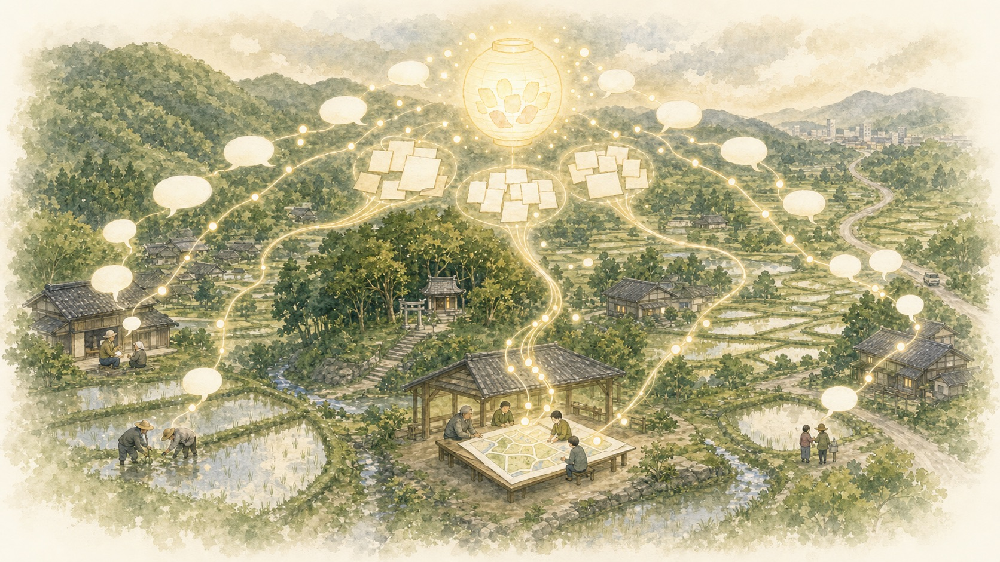

2025年、142軒すべてを回って、いっしょに村の未来を考えました。集まった声を、そのままお返しします。In 2025 we called on all 142 households and thought about the village's future together. Here we hand the voices we gathered back to you, just as they were spoken.
「このままでええんやろか」——多くの集落が、口には出しにくいこの問いを抱えています。2025年の秋から冬にかけて、神前でも、これからの村づくりについてみなさんに聞きました。いつもの寄り合いに来る人だけでなく、一軒一軒すべてに声をかけたのが、今回のいちばんの違いです。"Can we really just go on like this?" — it's a question many villages carry but rarely say out loud. Through the autumn and winter of 2025, we asked everyone in Kouzaki what they hoped for in the village-making ahead. What set this round apart was simple: we reached out not only to the regulars at the usual gatherings, but to every single household, one door at a time.
今回の取り組みには、もうひとつ新しい要素がありました。裏方に「生成AI」がいたことです。There was one more new element in this effort: behind the scenes, we had generative AI lending a hand.
質問に答えたり、長い文書の要点をまとめたり、新しい文章を自分で書いたりできる、新しい型の人工知能です。ここ数年で急速に賢くなり、世界中の仕事や暮らしの中で使われ始めています。It is a new kind of artificial intelligence that can answer questions, boil a long document down to its main points, and even write fresh text of its own. Over just the past few years it has grown remarkably capable, and it is finding its way into work and daily life around the world.
地域には、会報や報告書、調査の記録など、長年の蓄積が眠っています。生成AIは、それらを短い時間で読み込み、整理し直すことができます。「調べる・まとめる」をAIが受け持てば、人は考えることと話し合うことに時間を使える——人手の限られた集落でこそ、大きな力になると考えています。Every community sits on years of accumulated paper — newsletters, reports, survey notes — much of it left dormant. Generative AI can read through all of it in a short time and put it back in order. If the AI takes on the digging and the summarizing, people are free to spend their time thinking and talking things over. In a village short on hands, that could make a real difference.
むずかしい話ではありません。案を用意して、全戸に届けて、みなさんの評価をもらい、それを持ち寄って話し合った——その流れです。案づくりには、近ごろ話題のAIにも手伝ってもらいました。Nothing complicated here. We drew up the proposals, delivered them to every home, asked people to weigh in, then brought all of that back to the table to talk it through. For the drafting itself, we also leaned on the AI everyone's been talking about lately.
20年分の地域の記録をAIが整理し、方向性のちがう「4つの案」を用意。The AI sorted through 20 years of community records to prepare four proposals, each pointing a different way.
世話役8人と手分けして全戸を訪問。案を説明し、スマホの使い方もお手伝い。Splitting the rounds with eight local organizers, we called on every household, explained the proposals, and helped people with their phones where needed.
4つの案を「新しさ・実現しやすさ・役立ち度」で採点＋自由に記入。紙でもスマホでも。Each proposal was scored on freshness, feasibility, and usefulness, with room to write freely — on paper or by phone, whichever suited.
集まった声をまとめ、世話役で「どう受け止めるか」を話し合った。We pulled the responses together, and the organizers sat down to talk over how to make sense of them.
4つの案は、AIとともにつくりました。土台になったのは、歴代のワークショップ報告書、会報「ロハスなたより」、各種の調査記録——約20年分の資料です。AIがこれらを横断して読み込み、整理したからこそ、方向性の違う4つの案を短い期間で用意できました。逆にいえば、この幅広い検索と整理の力なしには、今回の取り組みは難しかったはずです。The four proposals were built together with the AI. The foundation was some 20 years of material — reports from past workshops, the community newsletter "Lohas na Tayori," and assorted survey records. Because the AI could read across all of it and put it in order, we managed to prepare four genuinely different proposals in a short span. Put the other way around: without that reach for searching and sorting, this whole effort would have been hard to pull off.
返ってきた536件の自由記述の分類と整理にも、AIを使いました。誰の声かわからない形で読み込み、似た意見をまとめ、大切なひと言を取りこぼさないように。数字だけでは見えない気持ちを拾う手助けをしています。We also used the AI to sort and group the 536 free-text comments that came back. It read them in a form where no one could be identified, drew similar views together, and tried not to let a single meaningful line slip through — helping us catch the feelings that numbers alone never show.
いつもの寄り合いに顔を出すのは、だいたい1〜2割の家。今回は——Usually only one or two households in ten turn up at the regular gatherings. This time, though —
83人のうち7割強が60歳以上。集落の高齢化を映した構成ですが、30〜50代、そして29歳以下の声もきちんと届いています。Just over 70 percent of the 83 were 60 or older — a picture that mirrors the village's aging. Still, voices from people in their 30s to 50s, and even those 29 and under, came through clearly too.
世話役中心の集まりでは、なかなか出てこない声があります。今回いちばん大事にしたのは、その「ふだん言えない本音」を、匿名で安心して出してもらうことでした。だから、うれしい声も、耳の痛い声も、そのまま載せます。Some things simply never come up at meetings run by the usual organizers. What mattered most to us this time was giving people a safe, anonymous way to say the things they normally hold back. So we're printing it all as it was — the warm words and the ones that sting alike.
自由記入欄から。すべて匿名で、どなたの声かは分からない形にしています。From the free-text field. All anonymous, kept in a form where no one can be identified.
今まで新しい取り組みをしてきたが、事業が重荷になっている現実がある。でも、住民どうしの助け合いは大切だと思う。We've taken on plenty of new projects over the years, but the truth is they've become a weight to carry. Even so, I believe neighbors helping neighbors still matters.
若い人がやりたいようにすればよい。Let the young people do it however they want.
これから先の神前を支えていく若い人の意見を、主体的に尊重すべき。ただ、若い人が少ないので……。We should truly respect the views of the young people who will carry Kouzaki forward. The trouble is, there are so few of them…
子育て世代として、子どもの居場所や遊び場が少ないと感じる。地域で子どもを守るしくみができれば、若い人も定住しやすいと思う。As a parent, I feel there are too few places for kids to gather and play. If the community had a way to look out for its children, I think young families would find it easier to settle here.
案は良いが、高齢化で難しい。外からの若い人の協力がいる。The proposals are good, but with everyone aging it's hard. We'll need younger hands from outside.
里山の山ぎわの田畑を再生して、獣害の少ない地区をつくれれば、新しい人も興味を持ってくれるかもしれない。If we could bring back the fields along the wooded foothills and make an area with less damage from wildlife, newcomers might just take an interest.
100人いれば100人、考え方は違う。今回をきっかけに、何回か続けて実施することが大事だと思う。Ask a hundred people and you'll get a hundred views. I think what counts is to take this as a beginning and keep at it, round after round.
いろいろ考えてくださって、ありがとうございます。やはり地域だけでなく、外からの手助けがないと、現状維持もできないと思います。Thank you for thinking all of this through. Honestly, without help from outside as well as our own, I don't think we can even hold things where they are.
今まで、神前のことに無関心すぎました。Until now, I paid far too little attention to Kouzaki.
これまでの取り組みが重荷になっている、という声が多くありました。それでも「助け合いは大切に」という思いは、みなさんに共通しています。Many said the projects of years past had become a burden. And yet the conviction that "helping one another matters" runs through everyone alike.
新しい挑戦への期待と、「自分たちについていけるか」という不安が、同じ人の中に同居しています。だからこそ、無理のない形が大事。Hope for something new and the worry of "can we keep up?" live side by side in the very same person. Which is exactly why a form that doesn't overtax anyone matters.
若い世代からは、子どもの遊び場や居場所が少ないという声が。定住のカギは、農業だけの話ではないのかもしれません。Younger residents spoke of how few places there are for children to play and belong. The key to putting down roots may not be about farming alone.
案は「攻め／守り」×「外の力を借りる／今のメンバーで」の掛け合わせで4つ。それぞれに、いいねの声と、心配の声が集まりました。The four proposals come from crossing two choices: pushing forward or holding steady, and drawing on outside help or working with the people we have. Each drew both praise and worry.
↑ 攻め（新しく動く）｜ ↓ 守り（今あるものを大切に） ／ ← 今のメンバーで 外の力を借りる →↑ Push forward (start something new) | ↓ Hold steady (care for what's here) / ← With the people we have Draw on outside help →
若い世代や新しいアイデアを迎え、神前米などを活かした加工・販売・観光で稼ぐ。Welcome younger people and fresh ideas, and earn a living through processing, sales, and tourism built around Kouzaki rice and the like.
静かな暮らしや景観は守りつつ、週末だけ手伝う「関係人口」の力を借りる。Keep the quiet life and the scenery intact, while drawing on "connected outsiders" who lend a hand on weekends.
ドローンやアプリ、共同化で作業を軽くし、今の顔ぶれのまま無理なく続ける。Lighten the work with drones, apps, and sharing, so the same faces can keep going without straining.
全部は抱えず、守るべき場所（棚田・神社など）を絞って、確実に次の世代へ。Rather than hold on to everything, narrow the focus to the places worth protecting — the terraced rice fields, the shrine — and pass them surely to the next generation.
実際にお配りした4枚がこちらです。文章も挿絵も、AIと一緒につくりました。画像を押すと大きく表示されます。Here are the four sheets we actually handed out. Both the words and the drawings were made together with the AI. Tap an image to see it larger.
住民のみなさん59人が「一番」に選んだ数。「今のメンバーで賢く続ける案三」と「思いきって挑戦する案一」が、ならんで一番人気でした。案一は“新しさ”は堂々の1位、ただ“実現しやすさ”では不安の声も。案四は“いちばん現実的”だけど票は少なめ——正直な結果です。These are the counts from the 59 residents who named a favorite. Proposal 3, "keep going smartly with the people we have," and Proposal 1, "take a bold leap," tied at the top. Proposal 1 ran away with first place on "freshness," though "feasibility" drew some anxious voices. Proposal 4 was called "the most realistic," yet won fewer votes — an honest result.
それぞれの案を「新しさ」「実現しやすさ」「役立ちそう」の3つの物差しで、10点満点でつけてもらった点数の平均です。Average scores, where people rated each proposal out of 10 on three measures: freshness, feasibility, and likely usefulness.
「新しさ」がいちばん高い案一は「実現しやすさ」がいちばん低く、「実現しやすさ」がいちばん高い案四は「新しさ」がいちばん低い——みごとな引っぱり合いです。一番人気の案三は、どの物差しでも突出しないかわり、大きな弱点もない。攻めと守りのあいだで、みなさんが現実的に選んだ様子がうかがえます。Proposal 1, highest on "freshness," scores lowest on "feasibility"; Proposal 4, highest on "feasibility," scores lowest on "freshness" — a neat tug-of-war. The overall favorite, Proposal 3, stands out on no single measure, but has no glaring weakness either. You can sense people making a level-headed choice, somewhere between pushing forward and holding steady.
世話役のみなさんの多くは、「住民はもう新しいことを望んでいないだろう」と感じていました。ところが、匿名で聞いてみると——Most of the organizers had a hunch that "residents probably don't want anything new anymore." But once we asked anonymously —
住民は、世話役が思うよりずっと
「新しい挑戦」に前向きだった。Residents were far more open to
"a new challenge" than the organizers imagined.
7人中4人が案四「受け継ぐ」を一番に。案一「ビジネス」を選んだ人は、ひとりもいませんでした。慎重で、守りの姿勢が中心でした。Four of the seven put Proposal 4, "hand it on," first. Not one chose Proposal 1, "business." Cautious, and mostly on the defensive.
一番人気は案一と案三（20票ずつ）。たとえば案一の「新しさ」は、住民6.4点に対して世話役3.7点——「やってみたい」という気持ちが、数字にはっきり出ました。The favorites were Proposals 1 and 3 (20 votes each). On Proposal 1's "freshness," for instance, residents gave 6.4 against the organizers' 3.7 — the wish to "give it a try" shows plainly in the numbers.
面と向かっては言いにくいこの気持ちが、匿名だからこそ見えてきました。「実現できるか」の見立ては両者ほぼ同じ。ちがったのは、新しさにどれだけ価値を感じるかだけ。ここが、これから話し合う出発点になります。A feeling hard to voice face to face came into view precisely because it was anonymous. On "can we pull it off," the two groups read things about the same. What differed was only how much value they placed on newness. That is where the conversations ahead can begin.
答えが一つに決まったわけではありません。でも、みなさんが何を大切にしていて、何に困っているかが、数字とことばで、はっきり見えてきました。うれしい声も、耳の痛い声も、これからの神前を考える大切な土台です。No single answer was settled on. But what you hold dear, and what you struggle with, came clearly into focus, in numbers and in words. The warm voices and the hard-to-hear ones alike form the ground we stand on as we think about Kouzaki's future.
声を寄せてくださって、
ありがとうございました。Thank you for sharing
your voices with us.
この取り組みは、これで終わりではありません。今回は、私たち大学側が手を動かしてAIを使い、案をつくり、声を整理しました。次に目指すのは、この営みがもっと自分で回るようにすること。村の記録と声を託した、神前専用の「AIコンシェルジュ」を置くイメージです。村専属の相談役として、地域の中の声も、学生や神前を応援してくれる地域の外の声も自動で集めて整理し、みなさんにお返ししながら、むらの計画づくりに活かしていく。「問いかけ → 声の整理 → 案の練り直し」というサイクルを、止めずに回し続ける仕組みです。人が減っても、知恵と情報の回転は止めない。生まれてくる案を受け止め、練り、決めていくのは、これからも神前のみなさんです。その伴走を、大学は続けていきます。This effort doesn't end here. This time, it was we at the university who did the legwork — using the AI, drafting the proposals, sorting the voices. What we're aiming for next is to let this cycle run more on its own. Picture a "AI concierge" made just for Kouzaki, entrusted with the village's records and its voices. As a full-time adviser for the village, it would gather and organize both the voices from within and those from outside — students, and others who cheer Kouzaki on — hand the results back to you, and feed them into the village's planning. It keeps a cycle turning without pause: ask a question, sort the voices, rework the proposals. Even as the population thins, the turning of knowledge and information doesn't stop. Taking up the proposals that emerge, refining them, and deciding — that stays, as ever, with the people of Kouzaki. The university will keep walking alongside you.
